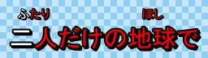

Aegisub / Furigana karaoke

Furigana (in Aegisub often shortened to furi) refers to little phonetic guide characters written along the main text in Japanese, specifically using the hiragana phonetic alphabet to describe how the ideographic kanji characters should be pronounced. Putting smaller text next to a main line of text is in general referred to as ruby text, but since the implementation discussed here is designed specifically with Japanese furigana in mind, the ruby text is also referred to as furigana everywhere.
None of the subtitle formats Aegisub supports natively support ruby text or furigana, however the karaskel.lua standard include implements an algorithm that can create basic furigana layouts by calculating the position of every individual character.
This page describes the syntax the Automation 4 karaskel.lua script understands for furigana text, and how to use the layout information it calculates to actually create positioned characters.
Karaoke Templater also implements support for furigana using the karaskel.lua algorithm and syntax.
It's important to note that the syntax is designed for karaoke, and revolves around karaoke timed text. It isn't suited for typesetting regular text (e.g. dialogue lines) with general purpose ruby text. A more elaborate syntax and more complex layout engine would be required for that.
Multi-highlight syntax
A prerequisite for an integral part of the furigana syntax is the multi-highlight syntax.
If you make the text of a syllable a number sign (#, ASCII 35, Unicode U+0023) that syllable will "join" with the previous one: The number sign is removed and the timing of the two syllables are added together, producing just one syllable. You can have multiple number sign syllables in a row, adding up multiple timings in that way.
The timings of the individual number sign syllables are still stored in the
highlight table of the
generated syllable structure, but the main timing (start_time and end_time)
of the syllable structure reflects only the added-together timings of the
number sign syllables.
This line shows how multi-highlight syntax is used to mark up kanji and groups of kanji that cover multiple syllables:
{\k5}明日<u>{\k10}#{\k5}#</u>{\k10}ま{\k7}た{\k10}会{\k4}う{\k6}時<u>{\k14}#</u>
It generates the following syllable structures:
| Text | Syllable duration | Highlight durations |
|---|---|---|
| 明日 | 20 | 5 |
| 10 | ||
| 5 | ||
| ま | 10 | 10 |
| た | 7 | 7 |
| 会 | 10 | 10 |
| う | 4 | 4 |
| 時 | 20 | 6 |
| 14 |
Basic furigana
To add furigana to a syllable, you add a pipe character (|, ASCII 124, Unicode U+007C) after the main syllable text, and then add the furigana text after the pipe. You can also add furigana to repeat-syllables (number sign syllables for multi-highlight) to have the furigana for a single main syllable span multiple furigana syllables.
When multiple consecutive syllables all have furigana, the furigana for all of those syllables are collected together and centered above the string of main syllables they belong to. If the string of furigana is wider than the main text the furigana is left-aligned with the main text. You can control this behaviour with special control characters, see below.
Adding furigana to the example above:
{\k5}明日<u>|あ</u>{\k10}#<u>|し</u>{\k5}#<u>|た</u>{\k10}ま{\k7}た{\k10}会<u>|あ</u>{\k4}う{\k6}時<u>|と</u>{\k14}#<u>|き</u>
The following syllables, highlights and furigana are produced:
| Text | Syllable duration | Highlight/furigana durations | Furigana |
|---|---|---|---|
| 明日 | 20 | 5 | あ |
| 10 | し | ||
| 5 | た | ||
| ま | 10 | 10 | |
| た | 7 | 7 | |
| 会 | 10 | 10 | あ |
| う | 4 | 4 | |
| 時 | 20 | 6 | と |
| 14 | き |
Controlling the layout
Often the layout produced with the plain furigana syntax isn't exactly what you want, or maybe even plain misleading. Because of this, there's two special characters that can be used to control how the furigana are laid out.
Both of these two special characters are placed before the first character of the furigana of a syllable, i.e. right after the pipe character.
First is the exclamation mark (!, ASCII 33, Unicode U+0021) which marks a "sequence break". This acts as a kind of invisible divider that prevents the furigana in this syllable from merging with that of the previous syllable. You will usually use this when you have two adjacent kanji words that both have furigana, but the furigana for them need to be separate. In that case, put the exclamation mark as the first character in the furigana for the first syllable of the second word.
The other special character is the less-than sign (<, ASCII 60, Unicode U+003C) which marks a "sequence break with float-left". It has the same sequence break semantics as the exclamation mark, but also changes the overflow behaviour. When the furigana sequence starts with a less-than sign marked furigana syllable is wider than the main text it applies to, it will always center above the main text, even if it means it has to extend over the left edge of it.
In all cases, if two furigana sequences extend beyond their main text such that they would overlap, the main text is moved such that the furigana won't overlap.
Here is the same (rather contrived) sample text shown without layout control and with each of the two layout control characters:
{\k10}中|ちゅ{\k10}#|う{\k10}国|ご{\k10}#|く{\k10}魂|た{\k10}#|ま{\k10}#|し{\k10}#|い |
|
{\k10}中|ちゅ{\k10}#|う{\k10}国|ご{\k10}#|く{\k10}魂|!た{\k10}#|ま{\k10}#|し{\k10}#|い |
|
{\k10}中|ちゅ{\k10}#|う{\k10}国|ご{\k10}#|く{\k10}魂|<た{\k10}#|ま{\k10}#|し{\k10}#|い |
It is very hard to tell the difference between the two first as the difference is only a few pixels, but it is there. In the first sample, the た extends a bit over the left edge of 魂 and above 国 while it exactly left-aligns with 魂 in the second. In the second, ちゅうごく is also centered above 中国 while it isn't in the first.
Summary
| Char | ASCII | Unicode | Where | Meaning |
|---|---|---|---|---|
| # | 35 | U+0023 U+FF03 |
Instead of main text | Extend previous syllable with another highlight |
| | | 124 | U+007C U+FF5C |
Between main text and furigana | Separate main text and furigana text of a syllable |
| ! | 33 | U+0021 U+FF01 |
First character of furigana | Sequence break; prevent joining furigana for this syllable with furigana from previous syllable |
| < | 60 | U+003C U+FF1C |
First character of furigana | Sequence break with float-left; prevent joining furigana for this syllable with furigana from previous syllable, but allow furigana to extend left of main text |
Note that every special character can in fact be represented by two different Unicode codepoints. The first is the regular character, corresponding to the ASCII character, while the second (high) codepoint is the full width version of the character. Often when using an IME (Input Method Editor) to edit Japanese text it is easier to input text in full width mode than switching the IME off to enter a single or two regular ASCII characters and switch it on again. Therefore both the half width (ASCII) and full width versions of the characters are accepted.
Usage in Karaoke Templater
Furigana: The furi template class
Multi-highlight: The multi modifier
The examples used earlier on this page are all generated using this kara-templater snippet:
Comment: 0,0:00:00.00,0:00:00.00,Default,,0000,0000,0000,template syl,{\pos(!line.left+syl.center!,!line.middle!)\an5\k!syl.start_time/10!\k$kdur}
Comment: 0,0:00:00.00,0:00:00.00,Default,,0000,0000,0000,template furi,{\pos(!line.left+syl.center!,!line.middle-line.height!)\an5\k!syl.start_time/10!\k$kdur}
Comment: 0,0:00:00.00,0:00:02.00,Default,,0000,0000,0000,karaoke,{\k15}二|ふ{\k15}#|た{\k10}人|り{\k15}だ{\k57}け{\k5}の{\k6}地|ほ{\k5}球|し{\k8}で
Comment: 0,0:00:02.00,0:00:04.00,Default,,0000,0000,0000,karaoke,{\k10}中|ちゅ{\k10}#|う{\k10}国|ご{\k10}#|く{\k10}魂|<た{\k10}#|ま{\k10}#|し{\k10}#|い
Comment: 0,0:00:04.00,0:00:06.00,Default,,0000,0000,0000,karaoke,{\k10}中|ちゅ{\k10}#|う{\k10}国|ご{\k10}#|く{\k10}魂|!た{\k10}#|ま{\k10}#|し{\k10}#|い
Comment: 0,0:00:06.00,0:00:08.00,Default,,0000,0000,0000,karaoke,{\k10}中|ちゅ{\k10}#|う{\k10}国|ご{\k10}#|く{\k10}魂|た{\k10}#|ま{\k10}#|し{\k10}#|い
The font used in MS PMincho 30 pt with the furigana being 15 pt.
Usage in Lua scripts
It's all in karaskel.
Furigana layout is automatically invoked by karaskel.preproc_line_pos if a
furigana style exists for a line main style. The furigana style for a main
style is a style with the same name, except -furigana appended to the name.
E.g. the furigana style of Default is Default-furigana.
Karaskel can generate automatic furigana styles if the generate_furigana
argument (second) to the karaskel.collect_head function is true. Automatic
furigana styles are identical to the main style they're based on, except the
font size is halved.
Furigana syllables are stored in line.furi and follows the same format as
regular syllables. You have to remember setting the style of the lines you
generate to the furigana style.
Multi-highlights are always processed even when furigana layout isn't done.
Multi-highlight data are stored in syl.highlights.